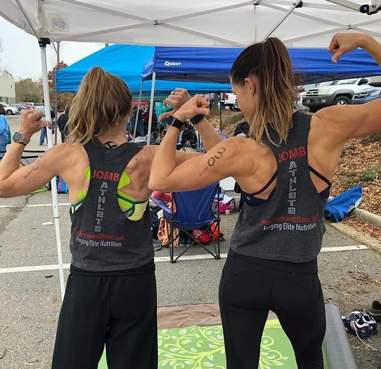

CrossFit athletes
Zone is a long-time favorite in CrossFit gyms. Have the week's meals delivered to your gym on Tuesday and skip Sunday meal prep for good.
Just One More Bite's Zone plan is 18 chef-made, 4-block Zone meals a week (6 breakfasts, 6 lunches and 6 dinners), delivered every Tuesday to homes, offices and CrossFit gyms in Raleigh, Cary, Morrisville, Research Triangle Park (RTP) and Knightdale. Each meal targets about 28–32 g protein, 34–40 g carbs and 12–16 g fat. The full week is $253, or $14.05 a meal. Order by Saturday at 8 PM.

Targets per meal28–32 g protein · 34–40 g carbs · 12–16 g fat
The Zone diet is about balance, not cutting things out. Every meal lands at roughly 40% of its calories from carbohydrate, 30% from protein and 30% from fat. Instead of counting calories, you count blocks.
Chef Mike builds every JOMB Zone meal at 4 blocks, so the counting is done before it reaches your fridge. Breakfast, lunch and dinner all aim for the same targets, which makes a week on plan as simple as heating the next container.
How many blocks you need depends on your size and your training. Your coach or a registered dietitian can help you set your own targets.
Chef Mike designed the Zone menu for fat loss and lean muscle gain. Here's who fills their fridge with it every week.
Take the whole week, or just the meals you need. Every option is six days of food from the same weekly Zone menu.
Breakfasts come three of each of two dishes. Lunches and dinners come two of each of three dishes.
 A week of meals, packed for Tuesday
A week of meals, packed for Tuesday*Individual results vary. JOMB meals support your goals; they aren't medical treatment. Read more client reviews.

JOMB athletes at a CrossFit competitionIn the Zone diet, one block is 7 g of protein, 9 g of carbohydrate and 1.5 g of fat. Every JOMB Zone meal is built at 4 blocks and targets about 28–32 g protein, 34–40 g carbohydrate and 12–16 g fat.
The Zone diet balances each meal at roughly 40% of calories from carbohydrate, 30% from protein and 30% from fat. You count blocks instead of calories, and Chef Mike builds every JOMB Zone meal to 4 blocks so you don't have to weigh anything.
They're targets, not lab-tested values. Chef Mike aims for 4 blocks in every meal and works to be as accurate as possible, but individual meals aren't always exact.
Yes. Order 6 breakfasts ($73.50), 6 lunches ($81) or 6 dinners ($108), or the full week of 18 meals for $253 ($14.05 a meal). Prices are before tax.
Yes. The double plan is 6 breakfasts, 6 lunches and 6 dinners for two people (36 meals) for $486, which works out to $13.50 a meal before tax.
Yes. Meals can be delivered to your CrossFit gym on Tuesday, as well as to homes and offices in Raleigh, Cary, Morrisville, Research Triangle Park (RTP) and Knightdale. Gym and office drops arrive in JOMB cooler bags; please bring them back to the drop point before the next delivery.
No. Keto cuts carbohydrate very low. Zone is balanced, at about 40% of calories from carbs, 30% from protein and 30% from fat, so JOMB Zone meals include real carbohydrates alongside lean protein.

Six days of lunches and dinners with no grains, no dairy and no added sugar.

Six days of lunches and dinners for cleaner, lighter eating that still tastes like a restaurant.

Real dinners the whole table will eat. Each one feeds three adults, or two adults and two kids.

New menu every Wednesday evening. Order by Saturday at 8 PM, and Chef Mike delivers Tuesday.
Questions? Call (919) 443-5408 or email jomborders@gmail.com.